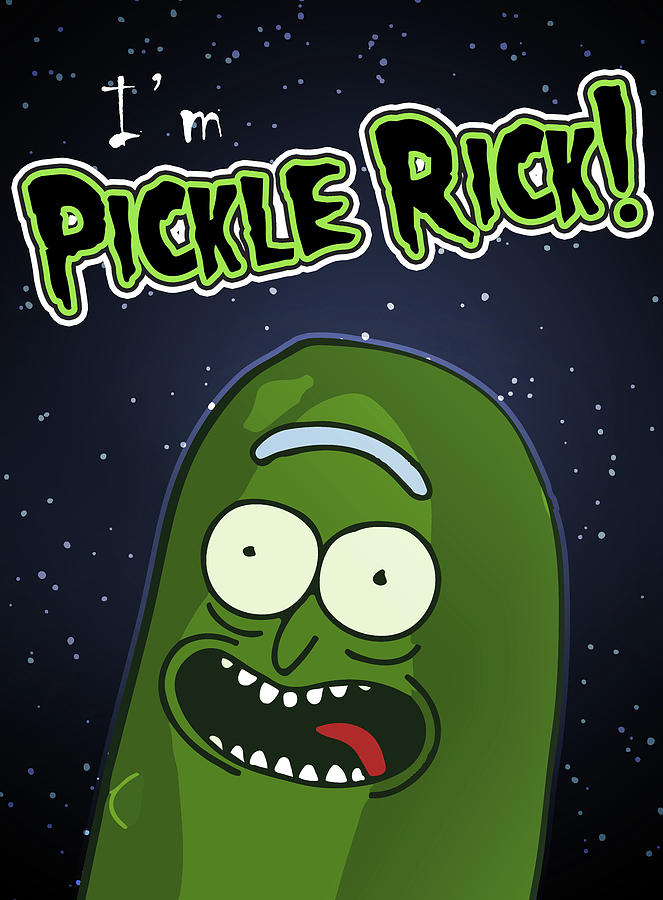

Le cornichon est partout dans notre monde, il ne nous quitte jamais. Il a même conquis Rick et Morty (Rick and Morty), une des plus grandes séries d'animation américaine, créée par Justin Roiland et Dan Harmon diffusée depuis le 2 décembre 2013 sur Cartoon Network.
La série suit les mésaventures de Rick Sanchez, un scientifique cynique fou, et de Morty Smith, son petit-fils perturbé et facilement influençable, qui partagent leur temps entre une vie domestique et des aventures interdimensionnelles.
La série provient d'une courte parodie animée reposant sur la trilogie de films Retour vers le futur, titrée The Real Animated Adventures of Doc and Mharti, créée par Roiland
Donc si toi aussi tu sens cornichons, rejoins notre communauté.